이 글은 전체 2편 중 2편입니다. 긴 영상을 주제 흐름에 맞춰 나누어 정리했습니다.
채널: AgentOS | 길이: 58:19 | 날짜: 2026-10-03
이 글은 전체 2편 중 2편입니다.
핵심 내용
- 헨리 포드의 초기 자동차는 조롱거리였다. 마차에 엔진을 장착한 원시적 형태에서 출발한 자동차는 1903년 변속기·액셀러레이터·클러치를 갖춘 근대적 개념으로 발표되었지만, 당시 미국 언론은 “기차보다 생산단가가 비싸면서 겨우 네 명만 타는 웃기는 물건”이라며 포드를 조롱했다. 워싱턴 포스트는 포드가 자동차를 거꾸로 들고 벌을 쓰는 만평까지 그렸고, 투자자 모집도 실패했다.
- 포드는 비망록에 미래를 기록했다. 세상이 자신을 바보라 비웃어도, 대량 생산이 이뤄지면 가격이 떨어지고 기차와 달리 원하는 시간·원하는 장소로 갈 수 있어 세상 물류를 뒤집을 것이라고 확신했다. 이 확신은 훗날 포드 T형 대량생산으로 현실이 되었고, 20년 만에 전 세계가 자동차 산업으로 재편됐다.
- 자동차의 확산은 ‘기름’이라는 병목을 낳았고, 이를 선점한 록펠러가 시대의 주인이 됐다. 포드 자동차가 열 대 생산되기도 전에 주유소 여덟 개를 세운 인물은 도로마다 주유소를 늘리고 정유공장 지분을 확대해 1940년대 중반 미국 주유·정유 시장의 94%를 독점했다. 결국 미국인들의 의회 청원으로 그 한 사람을 겨냥한 공정거래법이 만들어질 정도였다.
- 전쟁은 통신 기술의 결정적 계기가 됐다. 적군이 아군 무선 교신을 엿듣고 폭격하는 문제를 해결하기 위해, 인터폰 회사를 하던 인물이 음성 코딩·디코딩과 주파수 전환을 활용한 무전기를 만들어 전장에 대량 납품하며 대박을 냈다. 이것이 오늘날 모토로라의 시작이었다.
- 트랜지스터와 반도체는 진공관을 대체하며 전자산업의 판을 바꿨다. 1946년 휴대용 무전기에서 출발해 10년 뒤 트랜지스터(IC)가 개발됐고, 이를 진공관 대체재로 믿고 뛰어든 당시 중소 전자회사 중 0.9%가 톰슨·제너럴일렉트릭·필립스 같은 거대 전자회사로 성장했다. 1960년대 메카트로닉스(기계+전자) 시대가 열리며 이들이 시대의 주인이 됐다.
- 반도체는 “전기가 흐르기도 하고 안 흐르기도 하는 깜빡임”에서 PC라는 문명으로 이어졌다. 99%는 “어쩌라고?”라고 물었지만, 누군가는 강당만한 에니악 대신 개인 책상 위에 올릴 컴퓨터를 만들 수 있다고 생각해 조립하기 시작했고, 1980년대 컴퓨터 시대를 열었다. 이후 1990년대에 이르기까지 몇십 년마다 새로운 기회가 반복됐다.
- 박경철은 스스로를 99%에 넣었다. 1990년대 핸드폰은 삐삐를 차고 공중전화로 뛰어가던 시대의 사치품이었고, 그는 0.9%가 되고 싶었지만 다음 W(혁신의 기회)가 도무지 눈에 보이지 않았다. 그가 병원 원장에게서 선물 받은 핸드폰은 가입비 250만 원, 현재 가치로 그랜저 한 대값에 해당하는 물건이었다.
- 핸드폰을 둘러싼 친구들의 반응이 결정적 신호였다. 그는 고향 친구들에게 “머지않아 핸드폰도 싸져서 우리 모두 들고 다니게 될 것”이라고 말했지만, 친구들은 “삐삐면 충분하다, 그 큰 걸 누가 들고 다니며 비싼 통화를 하느냐”며 그를 바보 취급했다. 이 반응은 100년 전 헨리 포드의 자동차를 둘러싼 조롱과 정확히 같았고, 그는 그때 “이게 더 W구나”라는 직감을 얻었다.
- 그가 찾은 실행 방법은 ‘이동통신 회사 주식’이었다. 의사인 그가 이동통신 사업에 직접 뛰어들 수는 없었기에 한국이동통신(현 SK텔레콤의 전신) 주식을 사기로 했고, 당시 비상장 공기업이라 거래가 안 되자 명동 사채 시장에서 직원들이 내놓은 자사주를 2만 원에 매수했다. 이후 SK그룹 인수와 상장을 거치며 주가는 6만 5,000원이 됐고, 그는 6만 원이어도 사자며 월급이 생길 때마다 주식을 샀다.
- ‘주식 신’이라는 별명은 오해였다. 1999년 말 매도 시 2만 원짜리 주식이 520만 원이 되어 세상은 그를 주식투자의 대가로 불렀지만, 그는 자신이 주식투자자가 아니라 “우연히 지나가는 W 마지막 버스에 아슬아슬하게 뛰어들어 범퍼에 붙어 탄 승차 대기자”라고 항변했다. 방송국 취재 요청도 거절했지만, “그것이 알고 싶다”처럼 다리만 찍기로 한 약속이 깨지며 얼굴까지 전국에 노출됐다.
- 새 10년의 W는 자기 눈에 보이지 않았다. 2000년대를 앞두고 그는 자신이 창의적 천재가 아니라는 사실을 냉정하게 인정했고, “내 눈이 안 보이면 남의 눈을 빌리면 된다”는 결론에 따라 의사를 그만두고 10개월간 백수가 되어 대학 강사, 연극인, 연구소 연구원, 애니메이션 제작자 등 자신보다 똑똑하고 다른 집단에 속한 사람들을 만나 밥과 술을 사며 이야기를 들었다. 그렇게 해서야 “아, 이거였구나”라는 정리가 됐다.
- W를 알아보는 힘은 기술 스펙이 아니라 주변 반응과 예술적 감각에서 나온다. 그는 W를 알아본 신호가 “비싸다, 삐삐면 충분하다” 같은 주변의 비웃음이었고, 좋은 정보를 고르는 힘은 직관이며 그 직관은 예술에서 길러진다고 답했다. 영화처럼 다 떠먹여 주는 콘텐츠에 익숙해진 사람은 생략과 절제 속에서 알곡을 찾는 통찰을 잃어버리며, 오감과 육감을 깨워야 99개의 껍데기 중 하나의 알곡을 찾을 수 있다는 것이다.
- 직업 선택의 기준은 ‘밥벌이’가 아니라 ‘가치를 어디에 두는가’다. 그는 의사라는 직업이 경제적 이익·사회적 명예·성취를 위한 것이라면 더 나은 조건을 위해 과감히 버리는 게 맞지만, 철학적으로 가장 소중한 것이라면 지켜나가면서도 충분히 다른 일을 할 수 있다고 말했다. 개를 끌고 산책하는 비유처럼, 돈과 성취를 위해 방향을 바꾸면 주인의 줄에 목이 매인 개와 다름없는 삶이 된다.
- 1993년 강당의 박사들도, 2008년의 우리도 ‘지금의 상식’으로 다음 세상을 재는 오류를 범한다. 1993년 강당을 나간 사람들은 한국에서 경제를 제일 잘한다는 박사들이었고, “1년에 편지 세 통이면 충분하다”, “삐삐면 충분하다”는 계산은 그때 기준으로 모두 합리적이었다. 차이는 머리가 아니라 지금의 상식으로 다음 세상을 재지 않는 데서 났으며, 박경철이 0.9%가 된 방법도 천재성이 아니라 주변 반응에서 패턴을 알아보고, 남의 눈을 빌리고, 한 번 올라탄 뒤에도 다음 W를 찾아나선 집요함이었다.
상세 분석
1. 마차에 엔진을 얹은 자동차, 그리고 1903년 헨리 포드의 등장
19세기 말에서 20세기 초, 자동차는 처음부터 ‘자동차’로 인식되지 않았다. 기관(엔진)이 만들어지고 그것을 마차에 장착하는 초창기 형태의 원시적인 자동차가 등장했지만, 사람들은 그것을 근대적 개념의 자동차로 보지 않았다. 이 원시적 자동차는 마차의 몸체에 동력을 얹은 수준이었고, 그 자체로는 새로운 문명의 상징이 되지 못했다.
근대적 개념의 자동차를 처음 만든 사람은 헨리 포드다. 그는 1903년 변속기, 액셀러레이터, 이른바 클러치 장치까지 갖춘 자동차를 미국에서 제작·발표했다. 이는 단순히 엔진을 마차에 붙인 수준이 아니라, 운전자가 속도와 동력을 제어하며 도로를 달릴 수 있는 ‘근대적 자동차’의 원형이었다. 포드는 이 차를 세워 놓고 “이것이 자동차다”라고 선언했지만, 당시에는 레이싱 같은 검증 무대도 없었기 때문에 그 선언은 말 그대로 선언에 불과했다.
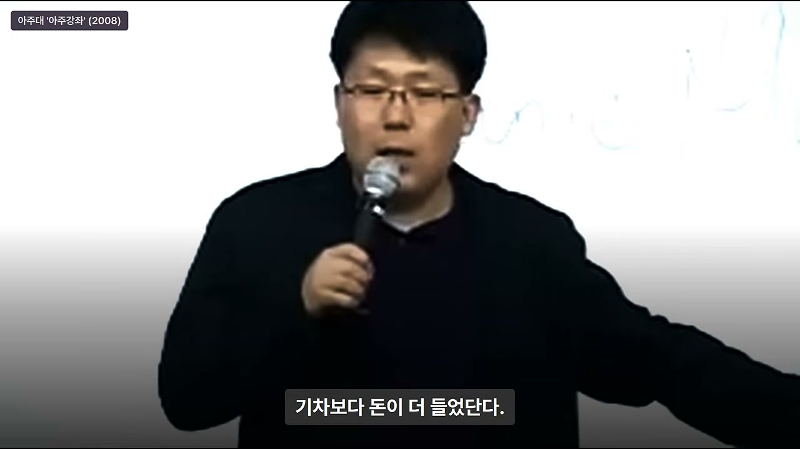
이 장면은 기술의 등장과 기술의 ‘인정’ 사이에 얼마나 큰 간극이 있는지를 보여준다. 포드가 만든 것은 기능적으로 새로운 물건이었지만, 세상이 그것을 새로운 문명으로 받아들이기까지는 별도의 설득과 검증, 그리고 시간이 필요했다.
2. 언론의 조롱 — “기차보다 비싸고 네 명밖에 못 타는 웃기는 물건”
포드가 자동차를 발표했을 때 미국 언론의 반응은 혁신에 대한 찬사가 아니라 조롱이었다. 신문들은 “쪼다(바보)가 자동차라는 물건을 하나 만들었는데 아주 웃기는 물건”이라고 썼다. 그 이유는 명확했다. 자동차 한 대를 만드는 데 기차보다 돈이 더 들었고, 그렇게 비싼 생산단가로 만든 물건이 실제로는 겨우 네 명밖에 타지 못했기 때문이다.
기차는 100명이나 태울 수 있는데, 자동차는 네 명만 태운다. 생산단가는 더 비싸고 운송 효율은 훨씬 떨어진다. 당시의 상식으로는 이것이 “신기술”이 아니라 “비효율의 극치”였다. 언론은 “이딴 것을 만들어 놓고 신기술이라 그러는 헨리 포드가 얼마나 쪼았냐”는 식으로 조롱했고, 워싱턴 포스트는 포드가 자동차를 거꾸로 들고 벌을 쓰는 만평까지 그렸다.
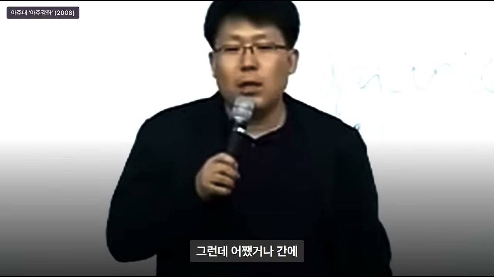
이 조롱은 단순한 악의가 아니라, 당시의 합리적 계산에 기반한 반응이었다. 문제는 그 합리적 계산이 ‘현재의 기준’으로 미래를 재고 있었다는 점이다. 포드의 자동차는 현재의 효율이 아니라 미래의 확장 가능성 위에 서 있었고, 언론은 그 가능성을 보지 못했다.
3. 투자 실패와 절망, 그리고 비망록에 남긴 포드의 확신
조롱은 투자 시장으로 이어졌다. 포드는 투자자를 모집하려 했지만 아무도 그의 사업에 뛰어들지 않았다. 그는 좌절하고 절망했고, 비망록에 자신의 심정을 적었다. “세상의 모든 사람들이 나를 바보라고 비웃는데, 나는 나를 조롱하는 사람들이 바보라고 확신한다.” 이유는 두 가지였다.
첫째, 사람들은 자동차 한 대를 만드는 비용만 보고 “비싸다”고 말하지만, 대량 생산이 이뤄지면 가격은 반드시 떨어진다. 둘째, 기차는 100명을 태울 수 있을지 몰라도 정해진 시간에 정해진 길밖에 가지 못한다. 반면 자동차는 원하는 시간에 원하는 곳으로 마음대로 갈 수 있고, 기차가 다니지 않는 모든 도시를 연결해 세상의 물류를 뒤집을 수 있다. 포드는 이 확신을 피눈물을 흘리면서 비망록에 남겼고, 이 장면은 훗날 그의 자서전 첫머리에 나오는 대목이 됐다.
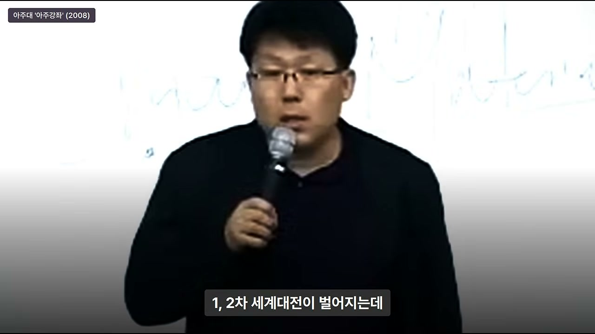
여기서 핵심은 포드가 ‘기술의 성능’만 믿은 것이 아니라 ‘기술이 바꿀 사회적 연결망’을 믿었다는 점이다. 자동차는 단순한 탈것이 아니라, 기차가 닿지 않는 모든 도시를 연결하는 물류 혁명의 도구였다. 이 관점이 훗날 자동차 산업의 폭발적 성장을 가능하게 했다.
4. 록펠러의 발견 — 자동차가 달리려면 기름이 필요하다
포드의 자동차가 세상을 뒤집으려면 해결해야 할 병목이 있었다. 바로 기름이다. 차를 사서 몰고 나오면 기름을 넣을 데가 없었다. 이 지점에서 한 인물이 주목한 것은 자동차의 성능이 아니라 ‘자동차가 물로 가나’ 하는 연료 문제였다. 그는 헨리 포드의 자동차가 불과 열 대 생산되기 전에 여덟 개의 주유소를 만들었다.
그로부터 3~4년의 세월이 흐른 1907년, 포드 T형 대량 생산 모델이 세상에 선보였다. 대량 생산으로 가격이 낮아진 근대적 자동차들이 쏟아져 나왔고, 그로부터 20년간 전 세계는 자동차 산업으로 뒤집혔다. 그러나 문제는 여전히 남아 있었다. 차는 넘쳐나는데 기름을 넣을 곳이 부족했고, 먼저 주유소를 선점한 사람이 새로운 도로마다 계속 주유소를 늘려갔다.
이 인물은 주유소뿐 아니라 정유공장 지분까지 넓혀갔다. 선점 효과는 막강했다. 새로 만들어진 도로마다 이미 그의 주유소가 자리 잡고 있었고, 경쟁자가 들어올 틈은 없었다. 결국 1940년대 중반까지 미국 전체 주유·정유 시장의 94%를 한 사람이 독점하게 됐다. 그가 바로 록펠러다.
5. 94% 독점과 공정거래법, 그리고 록펠러의 유산
한 사람이 주유·정유 시장의 94%를 독점하자 미국 사람들은 “못 살겠다”며 의회에 청원했다. “저걸 독점하고 있으니까 도저히 견딜 수 없다”는 것이었다. 결국 미국 의회는 그 한 사람을 겨냥한 법을 만들었고, 그것이 오늘날 우리가 아는 공정거래법의 기원이 됐다. 한 개인의 독점이 법 제정을 불러올 만큼, 자동차 산업의 파급력은 컸다.
록펠러는 전 세계의 부를 전무후무하게 긁어 모았고, 오늘날까지도 그 시대의 주인이었던 그의 영향은 미치고 있다. 이 사례는 기술 혁신이 직접적인 제품에서 끝나는 것이 아니라, 그 제품을 가능하게 하는 인프라(기름)에서 새로운 권력과 시장이 만들어진다는 것을 보여준다.
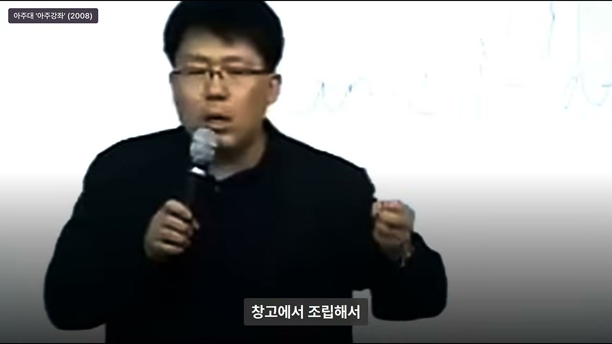
기술의 확산은 늘 ‘보이지 않는 병목’을 만든다. 자동차의 병목은 기름이었고, 그 병목을 선점한 사람이 시대의 주인이 됐다. 이는 훗날 인터넷의 병목이 통신 인프라가 되고, 모바일의 병목이 플랫폼이 되는 것과 같은 구조다.
6. 전쟁과 통신 — 무전기, 모토로라의 시작
록펠러로부터 약 10년의 세월이 흐른 뒤 1·2차 세계대전이 벌어졌다. 전쟁의 핵심 문제 중 하나는 통신이었다. 아군이 “대장님 폭격할까요?”라고 교신하면 적군이 그 내용을 듣고 “쟤들 폭격한다, 숨어라”라고 대응할 수 있었다. 통신이 적에게 노출되는 순간, 작전은 실패하고 병사들은 목숨을 잃었다.
이때 인터폰 회사를 하던 한 인물이 이렇게 생각했다. “어차피 음성을 코딩하고 디코딩해서 넘기는 게 다인데, 이걸 주파수로 넘기면 무전기를 만들 수 있겠다.” 그는 음성을 코딩·디코딩하고 주파수를 전환해 특정 주파수로만 통신할 수 있는 무전기를 만들었다. 그리고 대량으로 전장에 납품하며 대박을 냈다. 단순한 발상의 전환이었다.
이 무전기 사업이 오늘날 모토로라의 시작이었다. 1946년에는 휴대용 무전기(워키토키 계열)가 등장했고, 그로부터 10년 뒤에는 트랜지스터, 즉 IC가 개발됐다. 전쟁이라는 극한의 수요가 통신 기술을 앞당겼고, 그 기술이 민간으로 전환되며 새로운 산업이 탄생한 것이다.
7. 트랜지스터와 반도체 — “전기가 깜빡깜빡하는 게 반도체다”
트랜지스터가 개발됐을 때 사람들은 “누가 만들었나 보다” 하고 지나쳤다. 그러나 일부는 트랜지스터가 진공관을 대체하면 전자산업이 발달할 수 있다고 믿고 뛰어들었다. 당시 중소 전자회사들 중 선점에 뛰어든 수많은 0.9% 기업들이 있었고, 그중에는 톰슨, 제너럴일렉트릭, 필립스 같은 거대 전자회사로 성장한 곳도 있었다.
1960년대에는 기계와 전자가 결합한 메카트로닉스 시대가 열렸다. 전장(전자+기계) 문명의 시대가 도래하며 전 세계 문명은 수십 계단 위로 올라갔고, 이 전자회사들이 시대의 주인이 됐다. 또 10년이 흐르자 반도체가 등장했다.
반도체를 들고 나온 사람은 이렇게 설명했다. “전기가 흐르기도 하고 안 흐르기도 한다. 전기가 깜빡깜빡하는 게 반도체다.” 99%는 “그래서 어쩌라고?”라고 물었다. 전기가 깜빡이는 것이 도대체 무슨 의미가 있는지, 그것이 세상을 어떻게 바꿀지 상상하지 못한 것이다. 그러나 0.9%는 그 깜빡임 속에서 완전히 다른 미래를 봤다.
8. 반도체에서 PC로 — 강당만한 에니악을 책상 위로
반도체의 깜빡임을 본 누군가는 이렇게 생각했다. “강당만한 에니악 대신에 개인의 책상 위에 올려놓을 수 있는 컴퓨터를 이걸로 만들 수 있겠다.” 그들은 반도체를 조립해 퍼스널 컴퓨터를 만들기 시작했고, 그것이 1980년대 컴퓨터 시대를 열었다. 새로운 문명이 발달했고, 시대의 주인들이 무수히 등장했다.
이 과정은 반복되는 패턴을 보여준다. 새로운 기술이 등장하면 99%는 “어쩌라고?”라고 묻고, 0.9%는 그 기술이 기존의 거대한 것을 어떻게 대체할 수 있을지 상상한다. 반도체는 진공관을 대체했고, PC는 에니악을 대체했다. 대체의 방향을 본 사람이 시대의 주인이 됐다.
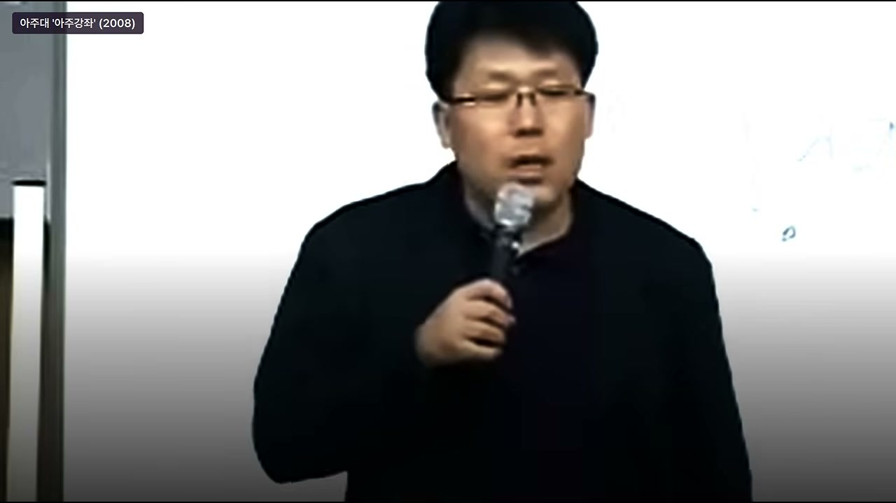
그리고 1990년대, 박경철이 직접 경험한 “바로 그 시대”가 다시 돌아왔다. 그는 이렇게 정리한다. “몇십 년마다 계속 기회가 주어지고, 기회를 만들어내는 0.1%의 창의적 인간과 그것을 알아보고 뛰어드는 통찰력·직관·안목 있는 인간, 그리고 ‘세상 살만해’라고 외치는 나머지 99%가 끊임없이 반복되어 왔던 역사다.” 그는 자신을 99%에 넣었고, 그 사실을 뒤늦게 깨달았다.
9. 1993년의 핸드폰 — 삐삐와 공중전화의 시대
1990년대 초, 핸드폰은 막 보급되기 시작한 사치품이었다. 대부분은 허리에 삐삐를 차고 다니다가 호출이 오면 공중전화로 뛰어가던 시대였다. 박경철은 0.9%가 되고 싶었지만, 다음 W가 도무지 눈에 보이지 않았다. 그는 “제 눈에는 뭐가 더 벌어질지 보이지 않았습니다”라고 회고한다.
그러던 차에 병원 원장이 그를 불렀다. “박 선생, 그동안 우리 병원이 초기 개원에서 어려운 시절에 고생했는데 선물 하나 줄게.” 원장은 서랍을 열어 시커먼 물건을 책상 위에 올려놓으며 “이건 자네 해”라고 했다. 그것은 핸드폰이었다.
당시 핸드폰을 들고 로데오거리를 지나가면 페라리 오픈카를 타고 지나가는 것과 똑같은 시선을 받았다. 가입비가 250만 원이었고 기계값도 거의 그에 준할 만큼 비쌌다. 현재 돈으로 환산하면 그랜저 한 대값이었다. 그것은 아무나 들고 다니는 물건이 아니라 재벌 회장 정도나 들고 다니는 물건이었다.
10. 선물의 이면 — 비용 처리와 ‘뼈를 묻겠다’는 결심
원장이 핸드폰을 건네는 순간, 박경철은 “내가 이 병원에 뼈를 묻겠다”고 생각했다. 그러나 나중에 알고 보니 병원이 이익이 나면 세금으로 내야 하는데, 그때는 가입비가 비싼 물건을 하나 사면 그것이 이익을 뒤파지(비용 처리)할 수 있는 경비 처리가 가능했다. 원장은 사실 수익을 빠지려고 몇 대 사서 준 것이었다.
그럼에도 그는 고마웠다. 그리고 그 핸드폰을 들고 대전역에서 기차를 타면 난리가 났다. 그가 3시 기차를 타면 간호사들에게 “3시 5분에 전화하라”고 일렀다. 기차가 덜컹덜컹 흔들리다가 3시 10분에 옥션(터널)을 통과하면 전화가 안 됐기 때문에, 딱 3시 5분에만 통화가 가능했다. 그래서 그는 자리에 앉아 기차가 덜컹거리는 순간 전화벨이 울리면 가방을 열고 전화기를 꺼냈다.
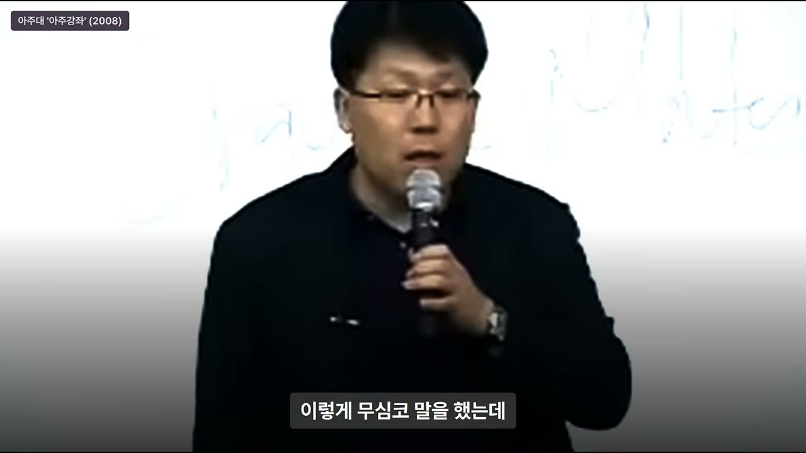
이 에피소드는 당시 핸드폰이 얼마나 희귀하고 불편한 물건이었는지를 보여준다. 동시에 기술의 초기 단계가 얼마나 조악하고 제한적이었는지, 그러나 그 불편함 속에서도 사람들이 새로운 가능성에 열광했는지를 보여준다.
11. “여보세요” 하고 일어서는 순간 쓰러지다 — 핸드폰의 위상
그는 가방에서 전화기를 꺼내 뚜껑을 열고 “여보세요”라고 하며 자리에서 일어서는 순간 쓰러졌다. 그야말로 영화 같은 장면이었다. 그러자 그 안에 있는 모든 승객의 시선이 그에게 꽂혔다. 눈빛은 이랬다. “어떻게 저런 분이 기차를 다 타셨을까? 소박도 하시지.”
핸드폰은 그 자체로 신분의 상징이었다. 기차 안에서 핸드폰을 꺼내 통화하는 것만으로도 모든 사람의 시선을 끌었고, 사람들은 그를 부러운 눈빛으로 바라봤다. 박경철은 그 경험을 고향 친구들 모임에서 자랑했다.
“너네들 이게 뭔지 아냐? 핸드폰인데 구경해 봤나?”라고 하자 친구들은 신기해서 막 만졌다. 그는 “다른 버튼은 다 눌러도 되는데, 녹색으로 SEND라고 써 있는 건 절대 누르면 안 된다”고 주의를 줬다. 통화료가 비쌌기 때문이다.
12. 친구들의 반응 — “삐삐면 충분하다, 핸드폰은 상용화될 수 없다”
박경철은 친구들에게 예언했다. “지금은 우리가 삐삐를 차고 다니지만, 그리 멀지 않아서 언젠가 이놈도 좀 싸지면 우리도 핸드폰 들고 다니는 시절이 오지 않겠냐?” 그러나 친구들의 반응은 싸늘했다. 전원이 하나같이 “무슨 소리 하느냐, 바보 아니냐”는 것이었다.
친구들의 논리는 당시 기준으로 완벽하게 합리적이었다. 7,000원만 내면 삐삐를 주고, 한 달에 2,000~3,000원만 내면 한 달 내내 마음대로 쓸 수 있었다. 말라도 가도 삐삐가 터졌다. 그런데 왜 그 큰 거를 들고 다니면서 비싼 통화를 무서워하며 다니느냐는 것이다. “삐삐만 해도 충분하다. 핸드폰은 상용화될 수 있는 물건이 아니다.” 친구들 전원의 반응이 똑같았다.
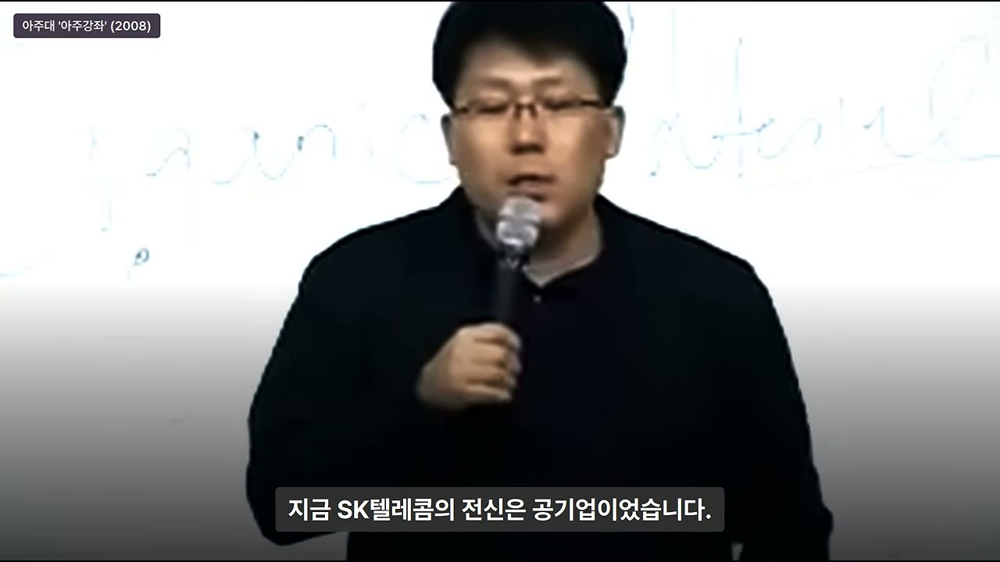
그 순간 박경철은 강한 기시감을 느꼈다. “이거 어디서 봤는데? 이 장면을 내가 어디서 경험한 듯한데?” 그는 곧 그 기시감의 정체를 깨달았다. 예전에 헨리 포드의 자서전에서 읽었던 장면이었다. 100년 전 포드의 자동차를 둘러싼 조롱과, 지금 자신의 핸드폰을 둘러싼 친구들의 조롱이 정확히 같은 구조였던 것이다.
13. “이게 더 W구나” — 100년 전 패턴을 알아보다
박경철은 깨달았다. “그래, 이게 더 W구나.” 100년이 지났지만, 새로운 기술을 둘러싼 99%의 반응은 똑같았다. “비싸다”, “기존 것으로 충분하다”, “그 큰 걸 누가 들고 다니냐”는 반응은 헨리 포드의 자동차에 쏟아졌던 “기차보다 비싸고 네 명밖에 못 탄다”는 조롱과 본질적으로 같았다.
그는 뒤도 돌아보지 않고 병원으로 달려가 총무에게 전화해 “이거 어디서 샀느냐”고 물었다. 총무는 한국이동통신 주식회사에 가입했고, 기계는 모토로라라는 미국 회사 제품이라고 알려줬다. 그는 “여기 뛰어들어야 된다”고 생각했지만, 곧 방법이 없다는 것을 깨달았다.
그가 배운 것은 칼질하는 것, 즉 의사로서의 일밖에 없었다. 그렇다고 의사 가운을 벗고 이동통신 사업에 뛰어들 수도 없었다. 그는 고민 끝에 “이 회사에 주식을 사면 되겠다”는 결론에 도달했다. 기술 자체에 뛰어드는 것이 아니라, 그 기술을 만드는 회사의 주주가 되기로 한 것이다.
14. 명동 사채 시장 — 2만 원짜리 한국이동통신 주식
그가 주식을 사려고 보니 한국이동통신은 공개업(비상장)이라 거래가 안 됐다. 당시 한국이동통신은 공기업이었고, 지금의 SK텔레콤의 전신이었다. 그런데 마침 SK그룹으로 넘어간다는 소문이 돌자, 한국이동통신을 다니던 사람들이 자신이 가지고 있던 자사주를 명동 사채 시장에 내놓고 있었다.
당시 명동 사채 시장에는 이런 종이들이 붙어 있었다. “금강제화 구두표 10만 원짜리 8만 원”, “엘칸토 구두표 10만 원짜리 7만 원”, “한국이동통신 주식 2만 원”, “대량 구매 시 협의 가능”. 구두 상품권과 이동통신 주식이 같은 시장에서 거래되고 있었던 것이다.
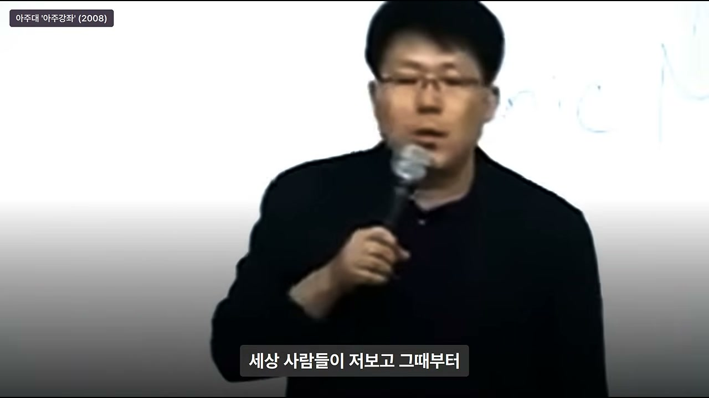
한국이동통신은 1994년 SK그룹에 인수됐고, 1997년 SK텔레콤으로 이름을 바꿨다. 박경철은 그 내용을 정확히 이해하지는 못했지만, “왠지 뛰어들어야 된다”고 생각했다. 그리고 “가서 월급만 받으면 된다”는 마음으로 생활비를 제하고는 무조건 한국이동통신 자사주를 샀다.
15. 2만 원에서 520만 원으로 — 그러나 그것은 W가 아니었다?
그로부터 얼마 되지 않아 한국이동통신이 SK텔레콤이 되고 주식 시장에 상장됐다. 주가는 6만 5,000원이 됐다. “야, 이거다”라고 생각할 만한 수익이었다. 그러나 그는 곧 의문을 품었다. “W에 올라탔는데 세 배 수익을 냈다는 것 자체로 W라고 보기에는 좀 어렵지 않습니까?”
그는 “W가 아니었나?” 하고 생각하다가 “아니야, W 맞을 거야”라며 6만 원이어도 사자고 결심했다. 월급이 생기면 주식을 샀다. 그는 주식을 산 것이 아니라, 자신이 순간 믿었던 W라는 곳에 뛰어드는 차표를 산 것이라고 생각했다.
3~4년이 지난 1999년 말, 그는 “아, 이제 한 시대가 끝났구나. 이제는 그만하자” 하고 주식을 모두 매도했다. 그때 주식은 520만 원이 되어 있었다. 2만 원에 산 주식이 520만 원이 된 것이다. 세상 사람들은 그때부터 그를 ‘주신(주식 신)’이라고 불렀고, “주식투자의 대가”라고 했다.
16. “나는 주식투자자가 아니다” — W 버스에 올라탄 승차 대기자
그러나 박경철은 억울했다. 그는 자신이 주식투자를 한 것이 아니라, “우연히 다행스럽게 지나가는 W 마지막 버스에 아슬아슬하게 뛰어들어 범퍼 위에 올라타서 딱 붙어서 그 버스에 타고, 다행히 다음 정거장으로 갈 수 있었던 것뿐”이라고 말한다. 그런데 세상이 그것을 ‘주식투자의 대가’라고 오해했다는 것이다.
방송국에서도 취재 요청이 왔다. “의사 한 사람이 이동통신 주식을 사서 대박 터졌다”는 소문을 듣고 찾아온 것이다. 그는 “저 아닙니다. 어느 모로 봐서 제가 아닙니다. 제가 핸드폰 그거 하게 생겼습니까?”라며 거절했다. 그러나 방송국은 “알고 왔다”고 했고, 그는 혹시나 그냥 나갈까 봐 약속을 했다. “그것이 알고 싶다”처럼 탁자 밑으로 다리만 찍고, 이름과 소속은 바꿔서 나가기로 했다. 심지어 슬리퍼 신은 발만 찍기로 했다.
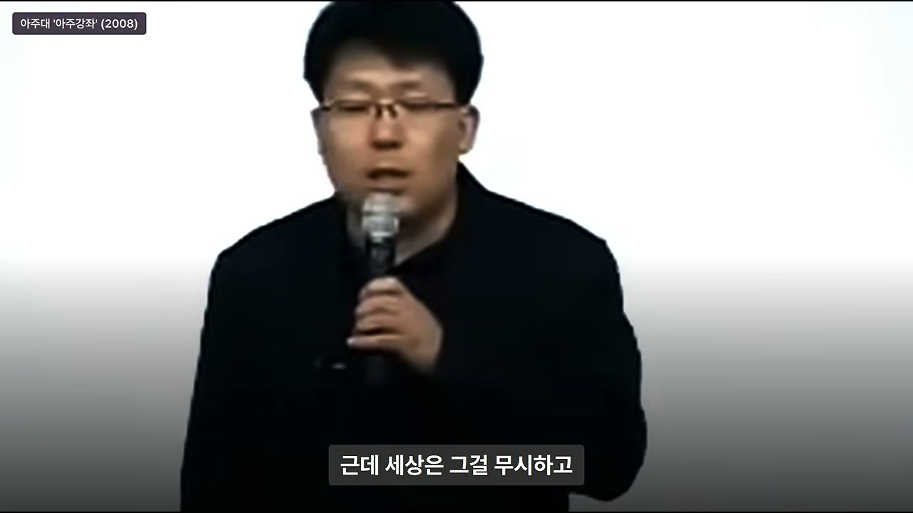
그런데 그날 저녁 뉴스에 “의사 출신 주신”이라는 타이틀로 얼굴까지 모두 나와 버렸다. 그 시대는 약속이라는 게 그랬다. 그때부터 그는 어쩌다 보니 밖에 끌려 나와 이야기를 하고 다녔지만, 지금도 계속 항변한다. “나는 주식투자자가 아니다. 나는 그냥 W 버스를 올라타기를 기다리는 승차 대기자일 뿐이다.”
17. W를 알아본 신호는 기술 스펙이 아니라 주변 반응이었다
그가 W를 알아본 신호는 기술 스펙이 아니었다. 주변 반응이었다. “비싸다”, “삐삐면 충분하다”, “그 큰 걸 누가 들고 다니냐”는 비웃음이 신호였다. 그는 헨리 포드 이야기에서 읽었던 자동차를 둘러싼 비웃음과 그것이 똑같다는 것을 알아챈 것이다.
이것은 중요한 통찰이다. 새로운 기술의 가능성은 기술 자체의 우수성만으로 판단할 수 없다. 오히려 기존 질서에 익숙한 사람들이 던지는 비웃음과 조롱이, 그 기술이 기존 질서를 얼마나 크게 뒤흔들 수 있는지를 역설적으로 보여준다. 조롱의 강도가 클수록 혁신의 파괴력도 클 수 있다는 것이다.
18. 2000년대의 숙제 — “새 10년의 W는 무엇인가?”
1999년 말 버스에서 내린 그는 스스로에게 다시 숙제를 냈다. “2000년부터 시작될 새 10년의 W는 뭘까?” 그러나 문제는 이번엔 그게 자기 눈에 보이지 않았다는 것이다. 그는 먼저 자신을 냉정하게 바라봤다. “내가 W가 아니고, 사람들이 자기가 창의적인 천재가 아니라는 사실은 본인이 잘 압니다.”
그런데 세상은 그 사실을 무시하고 모두에게 천재가 되라고 말한다. 학교 다니는 애들을 영재교육원 같은 데 보내는 것이 대표적이다. 구슬에 흙이 묻은 걸 닦으면 구슬이 되지만, 자갈을 들고 아무리 닦아도 옷만 벗겨진다. 그런데 엄마들은 자갈을 들고 계속 광을 내겠다고 영재교육원에 데려간다. 박경철은 “여러분 많이 시달렸지요”라며 청중에게 농담을 던진다.
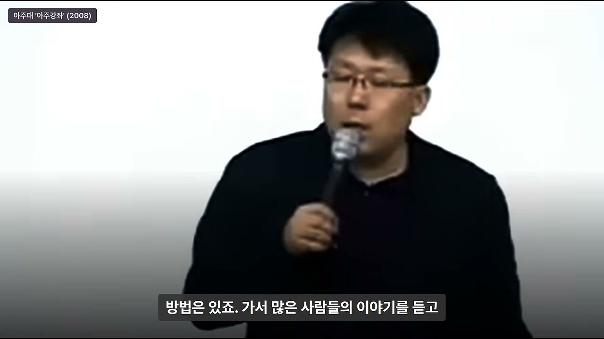
그는 0.1%를 두고 99%는 “이상한 행동하는 동키호테”라고 부른다고 말한다. 그러나 실제로 그런 행동을 하는 사람 중 99%는 진짜 동키호테가 맞다. 문제는 1만 명 중 한 명꼴로 진짜 혁신가가 섞여 있다는 것이다. 1만 명의 동키호테 중 하나의 W를 발견할 줄 아는 사람이 통찰력과 직관을 가진 사람이고, 나머지 99%는 “저것들 또라이”라고 생각하며 매번 앞서나가는 선을 보고 정신 나갔다며 끌어내린다.
19. 미셸 푸코의 《감시와 처벌》 — 인간의 어리석음에 대한 비판
박경철은 이 대목에서 미셸 푸코 같은 철학자들이 《감시와 처벌》을 통해 인간이 가지고 있는 어리석음을 통렬하게 비판했다고 언급한다. 다수의 사람들이 소수의 앞선 생각을 이해하지 못하고 “또라이”라고 낙인찍는 것은 단순한 무지가 아니라, 사회가 스스로를 보호하기 위해 새로운 가능성을 억압하는 구조적 현상일 수 있다.
그는 2000년대의 새로운 버스를 타지 못하면 다시 99% 유기물임을 재확인하는 것이라고 말한다. 그래서 반드시 올라타야겠다고 생각했지만, 아무리 사방을 둘러봐도 무엇이 더 벌어질지 보이지가 않았다. “새로운 10년에 더 벌어질 게 뭐냐?”라는 질문에 그의 눈은 여전히 답하지 못했다.
20. 백수 10개월 — “내 눈이 안 보이면 남의 눈을 빌리면 된다”
그는 지금도 자신이 0.9%의 인간은 아니라는 점, 1%가 안 된다는 점은 확실하다고 생각한다. 그러나 고민 끝에 방법을 찾았다. “가서 많은 사람들이 이야기를 듣고, 내 눈에 안 보이는 건 보이는 사람들 이야기를 들으면 된다.” 그래서 그는 2000년 말부터 2001년 중반까지, 과감한지 무모한지 모르겠지만, 의사를 그만두고 백수로 돌아가기로 결정했다.
그는 약 10개월간 백수로 지냈다. 놀면서 한 일은, 자신이 생각할 때 “이 사람은 더 벌일지 몰라”라고 생각하는, 자신보다 똑똑하고 많이 공부했으며 자신이 속하지 않았던 집단에 참여하고 있는 사람들을 찾아가 만나 이야기를 듣는 것이었다. 대학에서 강의하는 친구, 연극하는 친구, 연구소에 있는 친구, 기발한 친구, 심지어 애니메이션을 하는 친구까지 찾아갔다.
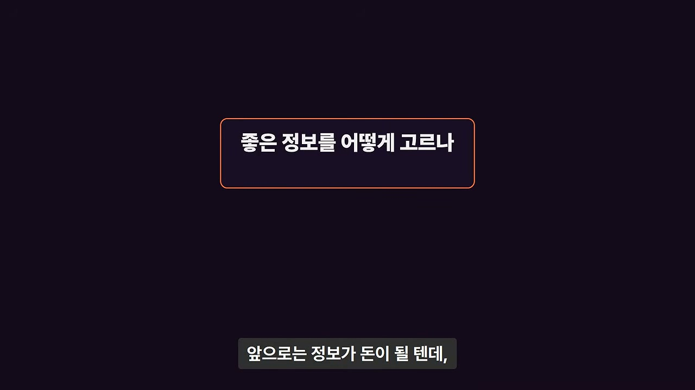
그는 그냥 밥을 사 주고 술을 사 주고 이야기를 들었다. “너네들 뭐 하고 있냐?”, “그거 어떻게 보이냐?”, “그 내용이 어떤 거냐?”라고 물었다. 10개월간 틈만 나면, 점심이건 저녁이건 아침이건 약속을 잡아 사람을 만났다. 그는 “현자들을 만난 것”이라고 표현한다. “내 머리가 안 되면 남의 머리를 빌리면 되니까.”
21. “아, 이거였구나” — 다른 사람의 눈으로 본 새로운 W
열 달 정도 사람들의 이야기를 듣다 보니 정리가 됐다. “아, 이거였구나.” 그는 자신에게는 볼 눈이 없었지만 다른 사람의 눈을 빌리니 보였다고 말한다. “자기 눈이 없으면 남의 눈을 빌린다.” 이것이 그가 0.9%의 조건으로 제시하는 두 번째 방법이다.
강연이 끝나고 질의응답이 이어졌다. 첫 질문은 “그 백수 친구가 누구냐”는 것이었다. 박경철은 “그건 다를 가리키는데 손가락을 보는 셈”이라며 공개 강연에서 특정인을 짚을 수 없다고 끝내 밝히지 않았다. 다만 강연이 알려진 뒤 인터넷에서는 그를 다음커뮤니케이션을 공동 창업한 이재웅 씨로 보거나, 깨비메일(한메일)을 만든 나라비전의 한의식 대표로 보는 추측이 많았다. 어느 쪽도 박경철이 직접 밝힌 이름은 아니다.
22. “정보가 넘치는 시대, 좋은 걸 어떻게 고르나?” — 직관과 예술
다음 질문은 지금 들으면 더 와닿는다. “앞으로는 정보가 돈이 될 텐데, 걸러지지 않은 정보가 너무 많다. 좋은 걸 어떻게 고르냐?”는 것이었다. 정보가 끝없이 쏟아지는 지금 들어도 18년 전 질문 같지가 않다. 그는 무엇을 취하고 버릴지 고르는 힘은 결국 직관이며, 그 직관은 예술에서 길러진다고 답했다.
그는 국립현대미술관에서 본 사례를 들려준다. 캔버스를 칼로 그어버린 그림이 있는데, 하루에 만 명이 “미친 그림”이라며 지나치는 그 앞에서 한 사람이 30분을 서 있다가 눈물을 흘렸다. 그 한 사람은 화가가 느낀 감정을 읽어낸 것이다. 같은 그림을 보고도 만 명은 지나치고 한 명은 감정을 읽어낸다. 이 차이가 직관이다.
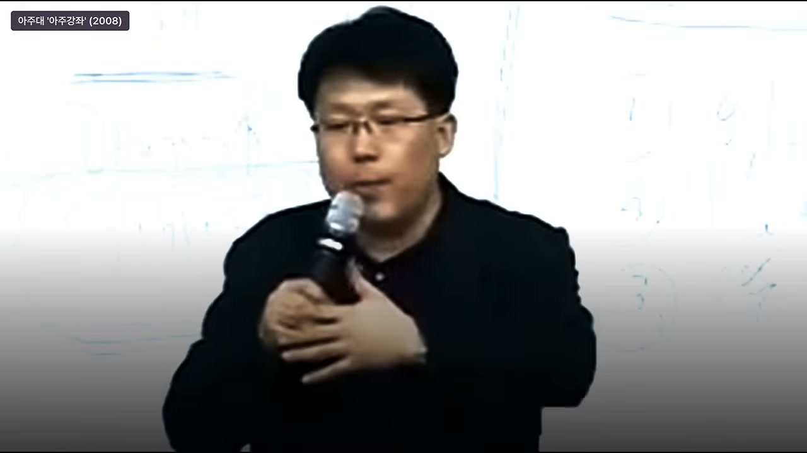
그는 이 차이를 영화, 연극, 무용으로 다시 설명한다. 영화는 다 떠먹여 주는 것이고, 연극과 무용은 비어 있는 자리를 내가 채워야 하는 것이다. 영화를 보면 모두가 재밌게 본다. 이유는 영화가 이야기하고, 음악을 들려주고, 배경을 보여주기 때문이다. 시청각 자극으로 입만 벌리고 있으면 다 떠먹여 준다. 상상할 여지가 전혀 없고, 상상하기 전에 자극이 먼저 튀어나와 깜짝깜짝 놀라게 한다.
23. 연극과 발레 — 생략을 채우는 감각
영화는 편하고 아무나 재밌게 본다. 그런데 같은 주제를 연극으로 바꾸면 절반은 잠든다. 배경이 사라지고 정해진 고정된 배경 안에서 두 사람의 대화와 몸짓만으로 효과를 내야 하기 때문이다. 효과가 사라진 상태에서 이야기를 하면 관객은 어느새 그것을 받아들이고 이해하는데, 처음에는 저해감을 느낀다. 끝까지는 괜찮다.
그러나 사랑을 주제로 한 연극을 발레로 바꾸면 두 명 빼고 다 잔다. 사랑을 표현하는데 말 한마디 없이 둘이 나와서 한 바퀴 돌고 픽 쓰러지는 것이 사랑이라는 것이다. 이해가 안 된다. 왜냐하면 우리는 생략에 익숙하지 못하고, 풍부하게 들려주는 것에만 익숙해져 있기 때문이다.
그는 요즘 사람들의 애정 표현 방식을 예로 든다. 이벤트를 한다고 식당을 빌리고 애드벌룬을 띄우고 “사랑해” 글씨를 크게 띄운다. 그 이벤트의 크기만큼 사실은 상대를 사랑하지 않는다는 말이다. 눈빛과 느낌, 교감으로 사랑의 마음을 다 보여주지 못했기 때문에, 보여주지 못한 것이 안타까워서 생쇼를 하는 것이다. 그것은 가식이다.
24. 오감과 육감 — 엉덩이 압박감까지 느껴야 한다
그는 사람마다 사물을 포착하는 방식이 다르고 감각이 다르다고 말한다. 길을 가다가 지나가는 돌부리를 발로 차는 사람과, 그 돌 밑에 있는 개미들의 평화가 깨질 것이라고 믿는 사람은 생각하는 것이 다르고, 포착이 다르고, 감각이 다르다. 그래서 살아 있는 오감과 육감을 모두 깨워야 한다.
그는 청중에게 즉석 실험을 제안한다. “지금 여러분이 의자에 앉아 있으면서 엉덩이가 의자에 눌려서 엉덩이가 무거운 느낌을, 제 말을 들으면서 느끼지요? 왠지 갑자기 엉덩이 압박감이 오지 않습니까?”라고 묻는다. 우리는 어느새 이런 감각들을 잃어버리고 산다. 시청각, 귀와 눈만으로 쉽게 보여주는 것들을 보면서 나머지 감각은 잊어버리고 사는 것이다.
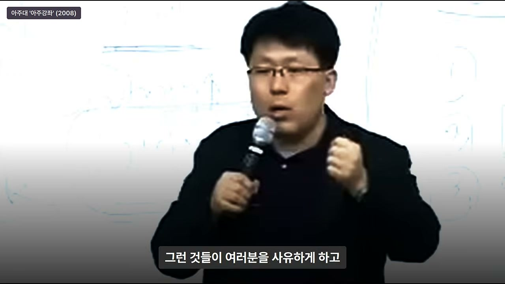
온몸의 감각이 생생하게 살아 있어야 한다. 길을 걸으면서 발바닥에 전해지는 느낌, 우리가 길을 가면서 생각에 잠겨 지나가면 어떤 길을 지났는지도 모르고, 쳐다보면서 가면 무슨 생각을 했는지도 모른다. 그런 것이 아니라 오감이 생생하게 살아 있고, 다른 사람이 보지 못하는 것을 느끼고, 생략되고 절제된 것 안에서 그것을 파악할 수 있는 눈을 가진 사람들이 결국 99개의 껍데기 중에서 진짜 한 개의 알곡을 찾아내는 통찰을 키운다.
25. 예술·문화·철학이 통찰을 만든다
그래서 중요한 것은 오히려 예술과 문화, 사회에 관심을 가지고 철학에 집중하고 관심을 가져야 한다는 것이다. 그런 것들이 사람을 사유하게 하고, 생각을 하나로 모아주고, 통찰하게 한다. 그래야 다른 사람보다 앞서갈 수 있다. 학문에서 전공하고 열심히 하는 것은 모두가 다 한다. 그러나 그들을 앞서기 위해 더 필요한 것은 통찰이다.
통찰은 오감과 육감이 살아 있음으로만 느낄 수 있다. 그러기 위한 노력과 준비가 필요하고, 그랬을 때 그것이 바로 여러분의 목표가 될 것이다. 이것이 그가 제시하는 0.9%의 세 번째 조건, 즉 ‘감각을 깨우고 예술과 철학을 통해 통찰을 기르는 것’이다.
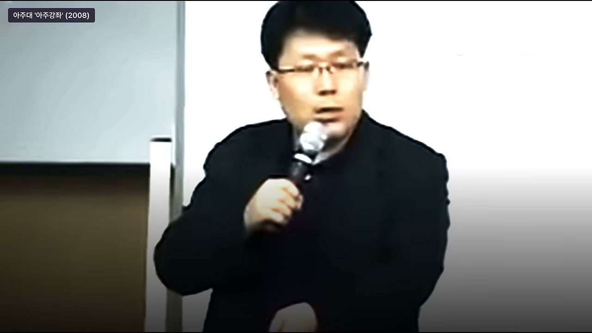
그는 0.9%가 되기 위해 반드시 기술을 공부해야 한다고 말하지 않는다. 오히려 기술을 포함한 세상을 읽는 ‘눈’과 ‘감각’을 키워야 한다고 말한다. 정보가 넘치는 시대에 무엇을 취하고 버릴지 고르는 힘은 데이터 분석이 아니라 직관이며, 그 직관은 예술과 문화, 철학을 통해 길러진다는 것이다.
26. 직업을 버려야 하는가? — “가치를 어디에 두느냐”의 문제
마지막 질문은 한 경제학과 학생이 했다. “자기가 발견한 W가 지금 공부하는 분야 밖에 있으면 하던 걸 버려야 하냐?”는 질문이었다. 박경철도 의사를 그만두지 않고 주식을 샀던 사람이기 때문에, 이는 기술이 크게 바뀔 때마다 직장인들이 하는 고민과 같은 질문이었다. 그는 먼저 자기 직업 이야기부터 꺼냈다.
의사라는 직업은 굉장히 특별한 직업이다. 그가 칼을 들고 수술실에 있을 때, 그 사람이 무엇을 하는 사람이든 누구이건, 그 순간은 인생에서 가장 절박한 순간이다. 환자는 수술의 결과에 따라 자신이 누구인지, 생사가 갈라진다. 그래서 그는 의사라는 직업을 그만둘 생각은 추호도 없다.
그는 말한다. “가치가 어디에 있느냐?”가 중요하다. 직업이라는 것을 경제적 이익, 사회적 명예, 혹은 성취에 둔다면, 더 나은 성취나 더 나은 이해를 줄 수 있는 것을 위해 과감하게 버리는 것이 맞다. 그러나 당신이 가지고 있는 직업이 철학적으로 가장 소중하게 생각되는 것이라면, 그럴 필요가 없다. 그것을 지키고 가는 것이 중요하다.
27. 개를 끌고 산책하는 비유 — 돈과 성취에 목매인 삶
그는 개를 끌고 산책하는 비유를 든다. 개를 끌고 가다 보면 개가 앞에 왔다 갔다 뛰다니다가 목적지에 도달한다. 그때 개는 자기가 주인을 데리고 왔다고 생각한다. 그러나 사실은 줄을 잡고 있는 주인이 가는 대로 개가 앞뒤로 왔다 갔다 하다가 온 것이다. 때로는 우리는 줄에 매달린 개와 같은 삶을 살고 있을 수도 있다.
돈이나 성취도 마찬가지다. 내가 가고자 하는 바를 뚜벅뚜벅 걸어가서 내가 가고자 하는 소중한 곳에 도착했을 때, 내가 지나온 곳 하나하나에 맺혀 있던 열매를 담아 보니 그것이 돈일 수도 있고 성취일 수도 있고 명예일 수도 있다. 그러한 것들이 주어져 있다면 좋다. 그러나 그것을 위해서 내가 방향을 바꾸고 뛰어가면, 그것은 주인의 줄에 목이 매어진 개와 다름없는 신세가 된다.
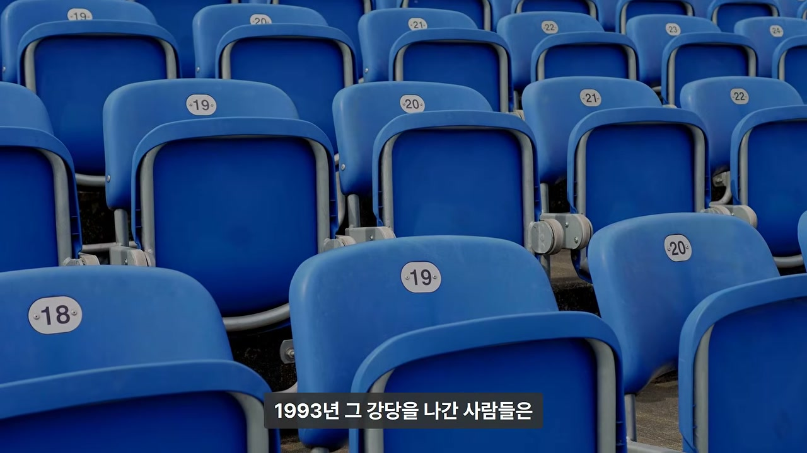
결국 중요한 것은 어디에 의미를 두느냐는 것이다. “모든 직업이 소중하다”는 말은 틀렸다. 내가 그 직업을 밥 먹기 위한 직업으로 삼는지, 의미와 가치를 위한 직업으로 삼는지가 중요하다. 우리는 대개 경제적 성취나 사회적 성취에 포인트를 맞추지만, 그 포인트가 삶의 방향을 결정해서는 안 된다.
28. “저를 보세요” — 직업의 가치를 지키면서도 여러 일을 할 수 있다
박경철은 자신을 예로 든다. 유치원 교사가 될 사람도 있고, 대학에서 학생을 가르치는 사람도 있고, 공무원이 될 사람도 있다. 그 직업의 가치와 철학에 매료된 사람들에게 그것은 제일 중요한 것이므로, 그것을 버리고 다른 것을 선택하는 것은 개가 되는 것과 같다. 그러나 그것을 지켜 나가면서도 세상은 충분히 가능하다.
그는 “저를 보세요”라고 말한다. 자신은 의사 면허를 가지고 의사로서 지내왔는데, 여기에 쓸데없는 사기꾼 비슷한 직업을 다 집어넣으면 한 30가지가 될 것이라고 농담한다. 그런데 그것이 가능하지 않냐는 것이다. 어떤 선택을 하느냐는 자기의 소신과 철학에 달려 있다.
이 대목은 0.9%가 되기 위해 반드시 기존 직업을 버려야 한다는 강박을 반박한다. 오히려 자신의 철학과 가치를 지키면서, 새로운 기회에 부분적으로 참여하는 방법을 찾는 것이 현실적이다. 박경철이 이동통신 주식을 산 것도 의사를 그만두지 않고 할 수 있는 방식이었다.
29. 1993년 강당의 사람들은 바보가 아니었다 — “지금의 상식으로 다음 세상을 재지 마라”
그는 1993년 그 강당을 나간 사람들은 바보가 아니었다고 강조한다. 그들은 한국에서 경제를 제일 잘한다는 박사들이었다. “1년에 편지 세 통이면 충분하다”는 계산도, “삐삐면 충분하다”는 친구들의 말도 그때 기준으로는 모두 합리적이었다. 그들이 틀린 것은 머리가 아니라, 지금의 상식으로 다음 세상을 재지 않았다는 데 있다.
박경철이 0.9%가 된 방법도 천재성이 아니었다. 그는 주변 반응에서 대박이 되는 패턴을 알아봤고, 자기 눈에 안 보이면 다른 사람의 눈을 빌렸고, 한 번 올라탔다고 멈추지 않고 다음 W를 찾아 나섰다. 그렇게 했는데도 2008년 그의 눈에는 다음 W가 아직 보이지 않았다.

이것이 그의 결론이다. 0.9%는 특별한 천재가 아니라, 99%의 반응을 신호로 읽고, 자신의 무지를 인정하며, 다른 사람의 눈을 빌리고, 한 번의 성공에 안주하지 않는 사람이다. 기술이 빨리 바뀌는 시대에 예전에는 어땠는지 찾아보는 것이 중요하다는 것도 이 때문이다.
30. 2008년 대학생들에게 던진 마지막 질문
강연의 마지막에 박경철은 2008년 대학생들에게 질문 하나를 던진다. “2년 뒤 무엇이 주인이 될지, 내 생각을 두 시간 동안 이야기할 수 있는가?” 이는 단순히 미래를 예측하라는 질문이 아니다. 자신이 세상을 어떻게 읽고 있는지, 그 읽기가 얼마나 일관되고 깊이 있는지를 스스로 점검하라는 질문이다.
그는 2년 뒤 무엇이 주인이 될지 두 시간 동안 이야기할 수 있는 사람이야말로 0.9%의 안목을 가진 사람이라고 암시한다. 그것은 정보를 많이 아는 것이 아니라, 정보를 꿰뚫어 보는 통찰과 직관, 그리고 감각이 있어야 가능한 일이다. 영상은 구독과 좋아요가 영상 제작에 큰 힘이 된다는 말로 마무리된다.
주요 인용 및 발언
“세상의 모든 사람들이 나를 바보라고 비웃는데, 나는 나를 조롱하는 사람들이 바보라고 확신한다. 이유는 뭐냐면, 그 사람들은 내가 자동차 한 대를 만들 때 드는 비용을 두고 비싸다고 말하지만, 대량 생산하면 가격은 떨어진다. 두 번째, 기차는 100명이 탈 수 있을지 모르나 기차의 단점은 정해진 시간에 정해진 길밖에 못한다. 하지만 내가 만든 자동차는 원하는 시간에 원하는 곳에 마음대로 갈 수 있고, 기차가 다니지 않는 모든 도시를 연결해서 세상 물류를 뒤집을 거다.” — 헨리 포드의 비망록, 박경철의 강연 인용
“지금은 우리가 삐삐를 차고 다니지만, 그리 멀지 않아서 언젠가 이놈도 좀 싸지면 우리도 핸드폰 들고 다니는 시절이 오지 않겠냐?” — 박경철이 고향 친구들에게 했던 말
“무슨 소리 하느냐. 바보 아니냐. 7,000원만 내면 삐삐를 주고, 한 달에 2,000원, 3,000원만 내면 한 달 내내 맘대로 쓸 수 있고, 말라도 가도 삐삐가 터지는데, 뭐 하려고 그 큰 거를 들고 다니면서 비싼 통화를 무서워해서 들고 다니느냐. 삐삐만 해도 충분하다. 핸드폰은 상용화될 수 있는 물건이 아니다.” — 친구들의 반응
“아, 이게 더 W구나.” — 100년 전 포드의 자동차 조롱과 지금 핸드폰 조롱이 같다는 것을 깨달은 순간
“나는 주식투자자가 아니다. 나는 그냥 W 버스를 올라타기를 기다리는 승차 대기자일 뿐이다.” — 박경철의 항변
“내가 W가 아니고, 사람들이 자기가 창의적인 천재가 아니라는 사실은 본인이 잘 압니다. 근데 세상은 그걸 무시하고 천재가 되라고 얘기하지요.” — 박경철
“구슬에 흙이 묻은 걸 닦으면 구슬이 되지만, 자갈 들고 아무리 닦아도 옷만 벗겨집니다. 그런데 엄마들은 자갈을 들고 계속 광을 내겠다고 영재교육원에 데려갑니다. 여러분 많이 시달렸지요.” — 박경철
“1만 명의 동키호테 중에 하나의 W를 발견할 줄 아는 안목을 가진 사람이 통찰력과 직관을 가진 사람이고, 나머지 99%는 보고 ‘저것들 또라이’ 이렇게 생각해 버립니다. 매번 앞서나가는 선을 보고 ‘저거 정신 나갔다, 또라이’ 떨어 끄집어내립니다.” — 박경철
“내 머리가 안 되면 남의 머리를 빌리면 되니까.” — 10개월 백수 기간의 이유
“자기 눈이 없으면 남의 눈을 빌린다.” — 0.9%가 되는 두 번째 방법
“정보가 넘치는 시대에 좋은 걸 어떻게 고르냐? 무엇을 취하고 버릴지 고르는 힘은 결국 직관이고, 그 직관은 예술에서 길러진다.” — 박경철의 답변
“영화는 다 떠먹여 주는 것이고, 연극과 무용은 비어 있는 자리를 내가 채워야 하는 것이다.” — 직관과 예술의 차이
“이벤트의 크기만큼 사실 당신을 사랑하지 않는다는 말입니다. 눈빛으로, 느낌으로, 교감으로 그 사랑의 마음을 다 보여주지 못했기 때문에, 보여주지 못한 것이 안타까워서 생쇼를 하는 겁니다. 가식을 하는 거죠.” — 박경철
“온몸의 감각이 생생하게 살아 있어야 됩니다. 오감이 생생하게 살아 있고, 다른 사람이 보지 못하는 것을 느끼고, 생략되고 절제된 거 안에서 그것을 파악할 수 있는 눈을 가진 사람들은 결국 99개의 껍데기 중에서 진짜 한 개의 알곡을 찾아낼 수 있는 통찰을 거기서 키웁니다.” — 박경철
“여러분들이 학문에서 전공하고 열심히 하는 것은 에브리바디가 다 하는 겁니다. 그러나 그들을 앞서기 위해서 내게 더 필요한 것은 통찰입니다. 통찰은 오감이 혹은 육감이 살아 있음으로만 느낄 수 있어요.” — 박경철
“직업이라는 것을 경제적 이익, 사회적 명예 혹은 성취 여기에 둔다면, 더 나은 성취나 더 나은 이해를 줄 수 있는 것을 위해서 과감하게 버리는 것이 맞습니다. 그러나 당신이 가지고 있는 직업이 철학적으로 내가 가장 소중하게 생각되는 것이라면, 그럴 필요가 없습니다.” — 박경철
“때로는 우리는 줄에 매달린 개와 같은 삶을 살고 있을 수도 있어요. 돈이나 성취를 위해서 내가 방향을 바꾸고 뛰어가면, 개 줄에 목이 매어진 개나 다름없는 신세가 될 거라는 거죠.” — 박경철
“1993년 그 강당을 나간 사람들은 바보가 아니었어요. 한국에서 경제를 제일 잘한다는 박사들이었죠. ‘1년에 편지 세 통이면 충분하다’는 계산도, ‘삐삐면 충분하다’는 친구들 말도 그때 기준으로는 다 합리적이었어요. 차이는 머리가 아니라 지금의 상식으로 다음 세상을 재지 않는 데서 났어요.” — 박경철
“박경철 원장이 0.9%가 된 방법도 천재성이 아니었어요. 주변 반응에서 대박이 되는 패턴을 알아봤고, 자기 눈에 안 보이면 다른 사람의 눈을 빌렸어요. 그리고 한 번 올라탔다고 멈추지 않고 다음 W를 찾아 나섰죠.” — 영상 내레이션
“2년 뒤 무엇이 주인이 될지, 내 생각을 두 시간 동안 이야기할 수 있는가?” — 2008년 대학생들에게 던진 마지막 질문
결론 및 시사점
이 영상은 ‘새 기술을 알아보는 0.9%의 조건’을 역사적 사례와 박경철 개인의 경험을 통해 입체적으로 보여준다. 헨리 포드의 자동차, 록펠러의 주유소, 모토로라의 무전기, 트랜지스터와 반도체, PC, 그리고 1990년대 핸드폰까지—기술 혁신의 역사는 늘 동일한 패턴을 반복한다. 소수는 새로운 기술이 기존 질서를 어떻게 대체할지 상상하고, 다수는 현재의 효율 계산으로 그것을 조롱한다. 그러나 그 조롱은 역설적으로 혁신의 파괴력을 증명하는 신호다.
박경철이 강조하는 0.9%의 조건은 세 가지로 정리할 수 있다. 첫째, 기술 스펙이 아니라 주변의 반응을 읽는 것이다. “비싸다”, “기존 것으로 충분하다”는 비웃음 속에서 100년 전 포드의 자동차와 똑같은 패턴을 발견하는 안목이 필요하다. 둘째, 자기 눈에 보이지 않으면 다른 사람의 눈을 빌리는 것이다. 그는 10개월간 백수가 되어 자신보다 똑똑하고 다른 집단에 속한 사람들을 만나며 “내 머리가 안 되면 남의 머리를 빌리면 된다”는 지혜를 실천했다. 셋째, 오감과 육감을 깨우고 예술·문화·철학을 통해 통찰을 기르는 것이다. 정보가 넘치는 시대에 좋은 것을 고르는 힘은 데이터가 아니라 직관이며, 그 직관은 생략과 절제를 채우는 감각에서 나온다.
또한 이 영상은 ‘0.9%가 되기 위해 모든 것을 버려야 하는가’라는 질문에 현실적인 답을 준다. 박경철은 의사를 그만두지 않고 이동통신 주식을 사서 기회에 참여했고, 의사라는 직업의 가치를 지키면서도 30가지가 넘는 일을 병행했다. 중요한 것은 직업 자체를 버리는 것이 아니라, 가치를 어디에 두느냐다. 돈과 성취를 위해 방향을 바꾸면 주인의 줄에 목이 매인 개가 되지만, 자신의 철학과 가치를 지키면서 기회를 찾으면 그것이 진정한 의미의 0.9%가 된다.
마지막으로 “2년 뒤 무엇이 주인이 될지 두 시간 동안 이야기할 수 있는가?”라는 질문은 오늘날에도 유효하다. 이는 단순한 예측 능력이 아니라, 세상을 읽는 일관된 관점과 통찰을 가지고 있는지를 묻는 질문이다. 기술이 빨리 바뀔수록 중요한 것은 새로운 기술 자체가 아니라, 그 기술이 바꿀 인간과 사회의 구조를 읽는 눈이다. 그 눈을 가진 사람이 99%의 조롱을 뚫고 0.9%의 기회에 올라탄다.
댓글
GitHub 이슈 기반 댓글 시스템입니다.